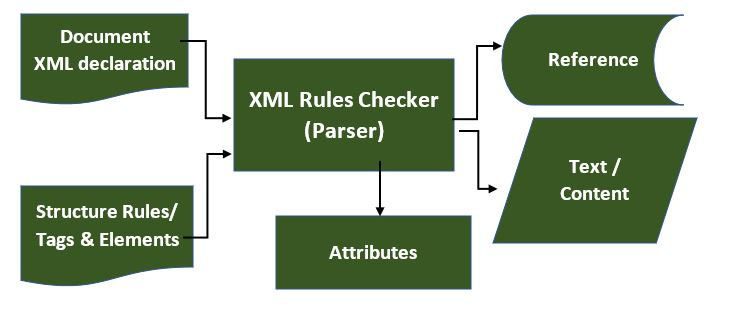
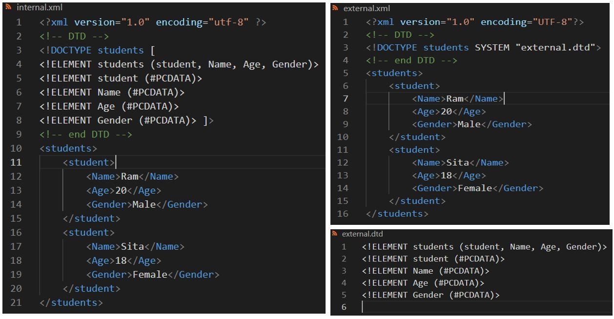

Fourth Sem DBMS
Sem-II C Programming
Basic concept of C
A. Introduction & History of C
1) C programming is the mostly used a general-purpose, procedural, imperative, systematic and structure computer programming language used to develop software like operating systems, device drivers, library functions, databases, compilers, and so on.
2) C is considered as a middle-level language because it supports the feature of both low-level (Assembly language) and high-level languages.
3) It can be defined by the following ways:
a. Mother language
b. System programming language
c. Procedure-oriented programming language
d. Structured programming language
e. Mid-level programming language
4) History of C:
i. ALGOL-60 (ALGOrithmic Language):
• Discovered in 1960 at Cambridge University
• Used for algorithmic conversion as alternative for FORTRAN
• FORTRAN (FORmula TRANlation)
ii. CPL (Combined Programming Language):
• Discovered in 1963 at Cambridge University
• It was used for general purpose
• It was hard to learn and difficult to implement.
iii. BCPL (Basic Combined Programming Language):
• Discovered in 1967 at Cambridge University by Martin Richard and his team
• BCPL was simplified version of CPL, but was so simple to solve specific problems
• PCPL was type less language
iv. B Language:
• Discovered in 1969 at AT & T's Bell Laboratories by Ken Thompson
• Like BCPL, B also turns out to be very specific
• It was also type of Less language
v. Traditional C Language:
• Discovered in 1972 at AT & T's Bell Laboratories by Dennis Richie,
• C contains data concept, and include features of BCPL & B
• C have features of previous generation and added more features
vi. K and R C Language:
• Discovered in 1978 by Kernighan & Dennis Ritchie
BCPL ("Basic Combined Programming Language") is a procedural, imperative, and
structured programming language developed by a British computer scientist Martin
Richards in 1966 by combining many features of different languages.
• Kenneth Lane Thompson is an American pioneer of computer science, developer of B
language in 1969, worked at Bell Labs for most of his career where he and his
student
Dennis Ritchie designed and implemented the original Unix operating system.
ANSI C, ISO C, and Standard C are successive standards for the C programming
language published by the American National Standards Institute (ANSI) and
International Organization for Standardization (ISO) and the International
Electrotechnical Commission (IEC).
• The original and best-supported version of the standard, known as C89 or C90.
B. Uses of C in:
Uses of C in:
A. Operating system: GUI and IDEs
B. Language assemblers, interpreters, compilers
C. Network drivers
D. Database Management System like MYSQL
E. Application programs, web browsers such as Mozilla Firefox, Thunderbird etc.
F. Text Editors
G. Print Spoolers
C. Features of C
the features of C language are:
1. C is a Mid-Level language
2. Structure bases
3. It supports graphics.
4. It has a huge library function.
5. It is a case-sensitive language.
6. It is simple, fast and efficient
7. It is portable
8. Easy to extend
9. It is also called middle-level language
10. Dynamic Memory Management
11. Modularity
12. Compiler based
13. Syntax based
14. It is Faster
15. It uses Pointers
16. Recursion etc.
D. Advantages of C Language
Advantages of C Language
a) Fast and efficient
b) Easy for debugging, testing & maintaining
c) Simple, versatile & portable general purpose language
d) Having high degree of language mobility
e) No limitation in programming
f) Structured language with functional flow control construct
g) User friendly
h) Having 32 keywords easy to remember
i) Having ability to extend itself and create more library function
E. Disadvantages of C languages:
Disadvantages of C languages:
a. No running time checking
b. It is case sensitive
c. No any concept of constructor and destructor
d. No concept of data hiding, inheritance and polymorphism
e. No enough library function to handle current programming environment
f. Mostly focus on structures and procedures not to data of real world
situation
g. May compile time overhead due to misplacing and excessive use of pointer
F. C Preprocessor:
Preprocessor in C:
- C preprocessor directive is a program that processes
the
source code before it is compiled by a compiler.
- It makes program efficient and easy to read, modify.
- It provides the ability for inclusion of header files, macro expansions,
conditional compilation & line control.
- It follows special Syntax: begins with the hash symbol or pound character (#)
and
followed by respective preprocessor directive.
- There are three types of preprocessor directives in C language.
=> Header file inclusive directive
=> Macro Substitution directives
=> Compiler control directives
G. Header File: inclusive directive:
Header File: inclusive directive:
- It is the main preprocessor directive
to
instruct compiler to include header files in the source code of a C program for the
operation/ execution.
- There are two ways to insert #include directive:
=> #include <header_File> or #include "header_File"
Some Header files:
=> #include <conio.h>: console input output functions: as getch(); clrscr();
etc.
=> #include <string.h>: for string functions like: strlwr(); strupr();
strcpy(),
strcmp() etc.
=> #include <graphics.h> for graphic files and functions: line(); circle();
rectangle() etc.
=> #include <math.h>: for mathematical functions: pow(); sqrt(); sin();
etc.
=> #include <stdlib.h>: for general purpose standard library of C:
exit(); etc.
=> #include <ctype.h>: character classification functions;
islower(); isspace(); toupper(); isalpha(); isdigit();
isupper(); tolower(); etc.
=> #include <time.h>: for data and time; setdata(); getdate()
etc.
=> #include <stdio.h>: standard input output functions: as printf(),
scanf();
getchar();
etc.
H. Tokens
Tokens in C:
- Token is a smallest individual part of C programming
language
which is used to write statement, identify errors.
In any programming language, a program is made up of smallest individual
syntactic
elements. The basic and smallest element used to develop the program and recognized
by
the compiler is called as C Tokens.
#|include|< |stddio |. | h |>
void | main |(|) |{|
int num = 16;
printf |(| "| The number is %d | "|, |num|) |;
}
From above analysis we have:
keyword: int, void,
identifier: include, stdio, h, main, num, printf
Constant: 16
operator: =
special symbols: #, <> ( ) { } ; , .
string: " The number is "
I. Keywords
Keywords / Reserved words:
- •Keywords: the reserved words that have
predefined meaning and standard in C language.
They serve as building blocks for program statements & must be written in lowercase.
They
cannot be used as identifiers or variable.
•The ANSI defines 32 keywords based on ASCII.
•The following are reserved words in C which not be used as constant or
variable or
any other identifier names.
Keywords are: auto, break, case, char, const, continue, default, do,double,
else,
enum, extern, float, for, goto, if, int, long, register, return, short, signed,
sizeof,
static, struct, switch, typedef, union, unsigned, void, volatile, while
J. Identifiers & Rules to declare
• C identifier is a name used to identify a variable, array, structure,union,
function,
or any other userdefined item.
• It starts with a letter A to Z or a to z or an underscore _ followed by zero
or
more letters, underscores,
& digits.
Rules to declare or define identifiers:
• C does not allow punctuation characters such as @, $, and % within
identifiers.
• C is a case sensitive programming language.
• Start with only alphabet or underscore
• Does not enclosed by single or double quote
• No symbols and keywords are used except underscore.
• No blank space is used in between.
• It allows both upper case and lowercase character as separate identifier.
The Client Tier [XML]
Introduction to XML
- XML stands for EXtensible Markup Language derived from Standard Generalized Markup Language (SGML).
- XML is created by the World Wide Web Consortium (W3C) to define a syntax for encoding documents that both humans and machines could read.
- XML uses unlimited user defined tags to define the structure of the document as well as how the document should be stored and transported.
- XML was designed to store, carry and exchange data.
- XML is case-sensitive, requires each tag is closed properly and preserves whitespace.
- XML was designed to be both human- and machine-readable.
- XML Does Not Use Predefined Tags. You must define your own tags.
- XML is self-descriptive
- XML is Extensible
- XML is a software- and hardware-independent tool for storing and transporting data.
- XML was created to structure, store, and transport information.
Difference between XML and HTML
- XML is case-sensitive, requires each tag is closed properly and preserves
whitespace.
- HTML is designed to display data, where XML is designed to transport and store
data.
- XML is not a replacement for HTML
- HTML is about displaying information, while XML is about carrying information.
Features and Uses/ Advantages of XML
XML is widely used in the era of web development. It is also used to simplify data storage and data sharing.
1. XML is an international standard: XML is a document standard that is maintained by the W3C (World Wide Web Consortium), an organization that is responsible for Web standards. XML documents are vendor-neutral, and they are not tied to one application or one company.
2. It Separates Data from HTML: If you need to display dynamic data in your HTML document, it will take a lot of work to edit the HTML each time the data changes. With XML, data can be stored in separate XML files. With a few lines of JavaScript code, you can read and external XML files and update the data content of your web pages.
3. It Simplifies Data Sharing: In the real world, computer systems and databases contain data in incompatible formats. XML data is stored in plain text format. This provides a software- and hardware-independent way of storing data. This makes it much easier to create data that can be shared by different applications.
4. XML Simplifies Data Transport: One of the most time-consuming challenges for developers is to exchange data between incompatible systems over the Internet. Exchanging data as XML greatly reduces this complexity, since the data can be read by different incompatible applications.
5. It Increases Data Available:Different application can access XML data and can be available to all kinds of “reading machines” (Handheld computers, voice machines, news feeds, etc.) and make it more available for blind people, or people with other disabilities.
6. XML can be used to create new internet language:A lot of new Internet
languages are created with XML: such as
XHTML: combination of HTML and XML
WSDL: for describing available web services
WAP & WML: for handheld devices
RSS: languages for news feeds
RDF & OWL: for describing resources and ontology
SMIL: for describing multimedia for the web
What is Markup?
Markup is information added to a document that enhances its meaning in certain ways, in that it identifies the parts and how they relate to each other. More specifically, a markup language is a set of symbols that can be placed in the text of a document to demarcate and label the parts of that document.
Structure Of XML Documents
XML documents are formed as element trees. An XML tree starts at a root element and
branches from the root to child elements. The terms parent, child, and sibling are
used to describe the relationships between elements.
The following diagram depicts the syntax rules to write different types of markups
and text in an XML document.

Syntax: Rules for writing XML:

1) XML DeclarationThe XML document can optionally have an XML declaration. It is written as below:
<?xml version="1.0" encoding = "UTF-8" ? >
This line is also called the XML prolog: Where version is the XML version and encoding specifies the character encoding used in the document.
Rules for XML Declaration:
a) The XML declaration is case sensitive and
must begin with "
<?xml>" where "xml" is written in lower-case.
b) If document contains XML declaration, then it strictly needs to be the first
statement of the XML document.
c) An HTTP protocol can override the value of encoding that you put in the XML
declaration.
2) Tags and Elements
An XML file is structured by several XML-elements,
also
called XML-nodes or XML-tags. XML-elements' names are enclosed by triangular
brackets < > as shown below:
< element >
Rules for Tags and Elements:
a) Each XML-element needs to be closed either with start or with end elements as
shown below
<element>....<⁄element> or in simple-cases, just this way: <element
⁄>
b) There is no limitation and predefined element ⁄ tag name, we can use
our own value related name. E.g.: < name> Surendra < ⁄ name>
c) If the XML declaration does not have a closing tag, this is not an error. The
declaration is not a part of XML.
Nesting of elements: An XML-element can contain multiple XML-elements.
Case sensitivity: The names of XML-elements are case-sensitive. That means the name of the start and the end elements need to be exactly in the same case.
3) Attributes
An attribute specifies a single property for the element, using a name/value
pair.
An XML-element can have one or more attributes.
Rules for XML Attributes:
a) Attribute names in XML are case sensitive. That is, HREF and href are considered
two different XML attributes.
b) Attribute names are defined without quotation marks, whereas attribute values
must always appear in quotation marks.
Eg. : <name id= “1”>Surendra < ⁄name>
4) XML References
References usually allow you to add or include additional
text or markup in an XML document. References always begin with the symbol "&",
which is a reserved character and end with the symbol ";". XML has two types of
references:
A. Entity References:Some characters have a special meaning in XML. If you
place a character like "<" inside an XML element, it will generate an error
because the parser interprets it as the start of a new element.
This will generate an XML error:
< message> Salary < 1000 < ⁄ message>
To avoid this error,
replace the "<" character with an entity reference:
There are 5 pre-defined
entity
references in XML:  B. Character
References:
B. Character
References:
These contain references, such as A, contains a hash
mark (“#”) followed by a number. The number always refers to the Unicode code of
a character. In this case, 65 refers to alphabet "A".
5) XML Text
The names of XML-elements and XML-attributes are
case-sensitive, which means the name of start and end elements need to be written in
the same case.
To avoid character encoding problems, all XML files should be saved as Unicode UTF-8
or UTF-16 files.
Whitespace characters like blanks, tabs and line-breaks between XML-elements and
between the XML-attributes will be ignored.
Comments in XML The syntax for writing comments in XML is similar to that of
HTML.
< !-- remarks / comment -->
Rules for Building Good XML (Well Formed XML)
1. All XML Documents Must Have A Root Element
2. All Tags Must Be Closed
3. All XML Tags Are Case Sensitive
4. All XML Elements Must Be Properly Nested
5. XML Attribute Values Must Be Quoted
6. White Space Is Preserved
7. Avoid HTML Tags (Optional)
8. Tag Naming Have Strict Limits (Rules)
Rules for naming XML Elements:
1. Names can contain letters, numbers, and
other characters
2. Names starts only from alphabets or underscore
3. Names cannot start with the letters xml (or XML, or Xml, etc)
4. Names cannot contain white/ blank spaces
XML Namespaces:
A Namespace is a set of unique names. Namespace is a mechanism by which
element
and attribute name can be assigned to group. The Namespace is identified by URI
(Uniform
Resource Identifiers). A Namespace is declared using reserved attributes. When using
prefixes in xml, a namespace for the prefix must be defined; xmlns : prefix = “URI”
shown as below:
<element xmlns:name="URL">
e.g.: <r : student xmlns : r =
“http://www.spt.com.np/xml/”> </r : student>
Elements and attributes name along with namespace have exactly one colon.
Colon before text prefix name and colon after text element or attribute
name.
The Namespace starts with the keyword xmlns.
The word name is the Namespace prefix, each prefix name is associated with one URI.
The URL is the Namespace identifier. Fully qualified name including prefix, colon is
called the XML qualified name.
XML data are exchanged between several applications, where may same tag name have
different meaning with different applications that make confusion on exchanging
documents. So, XML Namespaces is used to distinguish between duplicate elements and
attribute names.
Namespace affects only a limited area in the document. An element containing the
declaration and all of its descendants are in the scope of the Namespace. Following
is a
simple example of XML Namespace:
<?xml version="1.0" encoding="UTF-8"?>
<cont:contact xmlns:cont= " http://www.spt.com.np/Profile/">
<cont:name>Rajendra </cont:name>
<cont:company>ABC </cont:company>
<cont:phone>9867031614 </cont:phone>
</cont:contact>
Here, the Namespace prefix is cont, and the Namespace identifier (URI) as
www.spt.com.np/profile.
This means, the element names and attribute names with the cont prefix (including
the
contact element), all belong to the " http://www.spt.com.np/Profile/" namespace.
DTD (DOCUMENT TYPE DEFINITION) :
The XML Document Type Declaration (DTD): is a way to describe XML language
precisely. An XML document with correct syntax is called "Well Formed". A DTD
defines
the structure and the legal elements and attributes of an XML document. DTDs check
vocabulary and validity of the structure of XML documents against
grammatical rules of appropriate XML language. It allows to create rules for the
elements within XML document. A DTD defines the document structure with a list of
legal
elements and attributes. Although XML itself has rules, the rules defined in a DTD
are
specific to your needs.
So, for an XML document to be well-formed, it needs to
use
correct XML syntax, and it
needs to conform to its DTD or schema.
Note: if you have created your own XML elements, attributes and / or entities, then you should create a DTD but if you are creating using predefined elements/ attributes/ entities then a DTD should already exist, and you need only link to that DTD using DOCTYPE declaration.
Basic syntax of a DTD is as follows:
<!DOCTYPE element DTD identifier
[
declaration1
declaration2
........
]>
In the above syntax,
1. The DTD starts with <!DOCTYPE delimiter.
2. An element tells the parser to parse the document from the specified root
element.
3. DTD identifier is an identifier for the document type definition, which may
be
the path to a file on the system or URL to a file on the internet. If the DTD is
pointing to external path, it is called External Subset.
4. The square brackets [ ] enclose an optional list of entity declarations
called
Internal Subset.
Advantages:
a. Compact and easy to use
b. Can be defined outside/ inside XML document
c. Widely used
Disadvantages:
a. They lack some flexibility
b. Not writing using XML syntax.
c. No data type
When NOT to Use a DTD?
XML does not require a DTD.
When you are experimenting with XML, or when you are working with small XML files,
creating DTDs may be a waste of time.
If you develop applications, wait until the specification is stable before you add a
DTD. Otherwise, your software might stop working because of validation errors.
Types of DTD:
Internal DTD
A DTD is referred to as an internal DTD if elements are
declared
within the XML files. To refer it as internal DTD, standalone attribute in XML
declaration must be set to yes. This means, the declaration works independent of
external source.
The syntax of internal DTD is as shown:
<!DOCTYPE root-element [element-declarations]>
where root-element is the name of root element and element-declarations is where you
declare the elements. Example:
<?xml version="1.0" encoding="utf-8" ?>
<!-- DTD -->
<!DOCTYPE students [
<!ELEMENT students (student, Name, Age, Gender)>
<!ELEMENT student (#PCDATA)>
<!ELEMENT Name (#PCDATA)>
<!ELEMENT Age (#PCDATA)>
<!ELEMENT Gender (#PCDATA)> ]>
<!-- end DTD -->
<students>
<student>
<Name>Ram </Name>
<Age>20 </Age>
<Gender>Male </Gender>
</student>
<student>
<Name>Sita </Name>
<Age>18 </Age>
<Gender>Female </Gender>
</student>
</students>

External DTD
If the DTD is declared in an external file, the
<!DOCTYPE> definition must contain a reference to the DTD file:
<?xml version="1.0" encoding="utf-8" ?>
<!DOCTYPE students SYSTEM "external.dtd">
<students>
<student>
<Name>Ram </Name>
<Age>20 </Age>
<Gender>Male </Gender>
</student>
<student>
<Name>Sita </Name>
<Age>18 </Age>
<Gender>Female </Gender>
</student>
</students>
And here is the file "external.dtd", which contains the DTD:
<!ELEMENT
students
(student, Name, Age, Gender)>
<!ELEMENT student (#PCDATA)>
<!ELEMENT Name (#PCDATA)>
<!ELEMENT Age (#PCDATA)>
<!ELEMENT Gender (#PCDATA)>
< !ATTLIST tutorials type CDATA #REQUIRED>
COMBINED DTD
Combined DTD includes both an external DTD and an internal one for the same XML
document
same time. This could be useful if you need to adhere to a common DTD, but also need
to
define your own definitions locally. The internal DTD follows the external one but
still
resides within the DOCTYPE declaration:
<?xml version="1.0" standalone="no"?>
<!DOCTYPE tutorials SYSTEM "tutorials.dtd" [
<!ELEMENT tutorial (summary)>
<!ELEMENT summary (#PCDATA)> ]>
<tutorials>
<tutorial>
<name>XML Tutorial</name>
<url>https://www.quackit.com/xml/tutorial</url>
<summary>Best XML tutorial on the web!</summary>
</tutorial>
<tutorial>
<name>HTML Tutorial</name>
<url>https://www.quackit.com/html/tutorial</url>
<summary>Best HTML tutorial on the web!</summary>
</tutorial>
</tutorials>
DTD (DOCUMENT TYPE DEFINITION) :
DTD Formal Public Identifier (FPI)
When declaring a DTD available for public use, you need to use the PUBLIC keyword
within
your DOCTYPE declaration. When you use the PUBLIC keyword, you also need to use an
FPI
(which stands for Formal Public Identifier).
FPI Syntax:
An FPI is made up of 4 fields, each separated by double forward slashes (//): field
1//field 2//field 3//field 4
FPI Example
Here's a real life example of an FPI. In this case, the DTD was created by the W3C
for
XHTML:
-//W3C//DTD XHTML 1.0 Transitional//EN
DTD Attributes:
Attribute gives more information about an element or more precisely it defines a
property
of an element. An XML attribute is always in the form of a name-value pair. An
element
can have any number of unique attributes.
Basic syntax of DTD attributes declaration:
What is an XML Schema?
An XML Schema describes the structure of an XML document. The XML Schema language is also referred to as XML Schema Definition (XSD).
DTD (DOCUMENT TYPE DEFINITION) :
A. Summary
B. Practice Questions
Sem-III Web Technology
A. Summary
B. Exercise
Issues of Web Technology
A. ARCHITECTURAL ISSUES OF WEB LAYER
1) Web architecture is the process of designing, creating and implementing an internet-based computer program.
2) The web layer is also referred to as the UI layer. The web layer is primarily concerned with presenting the user interface and the behavior of the application (handling user interactions/events). While the web layer can also contain logic, core application logic is usually located in the services layer.
3) The Web layers are logical collections of geographic data that are used to create maps and scenes; they are also the basis for geographic analysis.
4) This layer, also called Business Logic or Domain Logic or Application Layer, accepts user requests from the browser, processes them, and determines the routes through which the data will be accessed.
5) The user interface layer represents the front end of the vSphere Web Client, and contains the actual GUI elements that users view and click.
B. The three Layers within the Web Layer are:
1. HTML-The Content Layer: The content layer is where you store all the content that your customers want to read or look at. This includes text and images as well as multimedia. It's also important to make sure that every aspect of your site is represented in the content layer. That way, your customers who have JavaScript turned off or can't view CSS will still have access to the entire site, if not all the functionality.
2. CSS - the Styles Layer: Store all your styles for your Web site in an external style sheet. This defines the way the pages should look, and you can have separate style sheets for various media types. Store your CSS in an external style sheet so that you can get the benefits of the style layer across the site.
3. JavaScript - the Behavior Layer: JavaScript is the most commonly used language for writing the behavior layer; ASP, CGI and PHP can also generate Web page behaviors. However, when most developers refer to the behavior layer, they mean that layer that is activated directly in the Web browser - so JavaScript is nearly always the language of choice. You use this layer to interact directly with the DOM or Document Object Model.
Benefits of separating the layers are:
Shared resources
Faster downloads
Multi-person teams
Accessibility
Backwards compatibility
C. Tier (Layer) Technology
Tier Technology: is a logical architecture of software where various components are organized in different tier for desired functions.
A Tier Technology: is a software architecture in which different software components, organized in tiers (layers), provide dedicated functionality.
Software Architecture consists of One Tier, Two Tier, Three Tier, and N-Tier architectures.
For decades three-tier architecture was the prevailing architecture for client-server applications. Today, most three-tier applications are targets for modernization, using cloud-native technologies such as containers and microservices, and for migration to the cloud.
Three layers are involved in the application namely Presentation Layer, Business Layer, and Data Layer.
The presentation tier: is the user interface and communication layer of the application, where the end user interacts with the application. Its main purpose is to display information to and collect information from the user. This top-level tier can run on a web browser, as desktop application, or a graphical user interface (GUI). Web presentation tiers are usually developed using HTML, CSS and JavaScript.
The application tier (business logic, logic tier, or middle tier): is the heart of the application. In this tier, information collected in the presentation tier is processed - sometimes against other information in the data tier - using business logic, a specific set of business rules. The application tier can also add, delete or modify data in the data tier. It is typically developed using Python, Java, Perl, PHP or Ruby, and communicates with the data tier using API calls.
The data tier/ database tier/ data access tier or back-end: is where the information processed by the application is stored and managed. This can be a relational database management system such as PostgreSQL, MySQL, MariaDB, Oracle, DB2, Informix or Microsoft SQL Server, or in a NoSQL Database server such as Cassandra, CouchDB or MongoDB.
In a three-tier application, all communication goes through the application tier. The presentation tier and the data tier cannot communicate directly with one another.
D. Tier vs. layer
In discussions of three-tier architecture, layer is often used interchangeably – and
mistakenly – for tier, as in 'presentation layer' or 'business logic layer.'
They aren't the same. A 'layer' refers to a functional division of the software,
but a
'tier' refers to a functional division of the software that runs on infrastructure
separate
from the other divisions. The Contacts app on your phone, for example, is a
three-layer
application, but a single-tier application, because all three layers run on your
phone.
E. Types of Software Architecture:
1. One Tier Architecture: One-tier architecture has all the layers such as Presentation, Business, Data Access layers in a single software package. Applications that handle all the three tiers such as MP3 player, MS Office come under the one-tier application. The data is stored in the local system or a shared drive.
2. Two-Tier Architecture (client-server application):
The Two-tier architecture is divided into two parts: Client Application
(Client
Tier), and Database (Data Tier)
The client system handles both Presentation and Application layers and the Server
system
handles the Database layer. The communication takes place between the Client and the
Server.
The client system sends the request to the server system and the Server system
processes the
request and sends back the data to the Client System
Three-Tier Architecture:
The Three-tier architecture is divided into
three
parts:
1. Presentation layer (Client Tier)
2. Application layer (Business Tier)
2. Database layer (Data Tier)
The client system handles the Presentation layer, the Application server handles the
Application layer, and the Server system handles the Database layer.
Note: Another layer is the N-Tier application. N-Tier application AKA Distributed
application. It is similar to the three-tier architecture but the number of
application
servers is increased and represented in individual tiers in order to distribute the
business
logic so that the logic will be distributed.
E. Exercise
E. Exercise
E. Exercise
The Client Tier [XML]
Introduction to XML
- XML stands for EXtensible Markup Language derived from Standard Generalized Markup Language (SGML).
- XML is created by the World Wide Web Consortium (W3C) to define a syntax for encoding documents that both humans and machines could read.
- XML uses unlimited user defined tags to define the structure of the document as well as how the document should be stored and transported.
- XML was designed to store, carry and exchange data.
- XML is case-sensitive, requires each tag is closed properly and preserves whitespace.
- XML was designed to be both human- and machine-readable.
- XML Does Not Use Predefined Tags. You must define your own tags.
- XML is self-descriptive
- XML is Extensible
- XML is a software- and hardware-independent tool for storing and transporting data.
- XML was created to structure, store, and transport information.
Difference between XML and HTML
- XML is case-sensitive, requires each tag is closed properly and preserves
whitespace.
- HTML is designed to display data, where XML is designed to transport and store
data.
- XML is not a replacement for HTML
- HTML is about displaying information, while XML is about carrying information.
Features and Uses/ Advantages of XML
XML is widely used in the era of web development. It is also used to simplify data storage and data sharing.
1. XML is an international standard: XML is a document standard that is maintained by the W3C (World Wide Web Consortium), an organization that is responsible for Web standards. XML documents are vendor-neutral, and they are not tied to one application or one company.
2. It Separates Data from HTML: If you need to display dynamic data in your HTML document, it will take a lot of work to edit the HTML each time the data changes. With XML, data can be stored in separate XML files. With a few lines of JavaScript code, you can read and external XML files and update the data content of your web pages.
3. It Simplifies Data Sharing: In the real world, computer systems and databases contain data in incompatible formats. XML data is stored in plain text format. This provides a software- and hardware-independent way of storing data. This makes it much easier to create data that can be shared by different applications.
4. XML Simplifies Data Transport: One of the most time-consuming challenges for developers is to exchange data between incompatible systems over the Internet. Exchanging data as XML greatly reduces this complexity, since the data can be read by different incompatible applications.
5. It Increases Data Available:Different application can access XML data and can be available to all kinds of “reading machines” (Handheld computers, voice machines, news feeds, etc.) and make it more available for blind people, or people with other disabilities.
6. XML can be used to create new internet language:A lot of new Internet
languages are created with XML: such as
XHTML: combination of HTML and XML
WSDL: for describing available web services
WAP & WML: for handheld devices
RSS: languages for news feeds
RDF & OWL: for describing resources and ontology
SMIL: for describing multimedia for the web
What is Markup?
Markup is information added to a document that enhances its meaning in certain ways, in that it identifies the parts and how they relate to each other. More specifically, a markup language is a set of symbols that can be placed in the text of a document to demarcate and label the parts of that document.
Structure Of XML Documents
XML documents are formed as element trees. An XML tree starts at a root element and
branches from the root to child elements. The terms parent, child, and sibling are
used to describe the relationships between elements.
The following diagram depicts the syntax rules to write different types of markups
and text in an XML document.
Syntax: Rules for writing XML:
1) XML DeclarationThe XML document can optionally have an XML declaration. It is written as below:
<?xml version="1.0" encoding = "UTF-8" ? >
This line is also called the XML prolog: Where version is the XML version and encoding specifies the character encoding used in the document.
Rules for XML Declaration:
a) The XML declaration is case sensitive and
must begin with "
<?xml>" where "xml" is written in lower-case.
b) If document contains XML declaration, then it strictly needs to be the first
statement of the XML document.
c) An HTTP protocol can override the value of encoding that you put in the XML
declaration.
2) Tags and Elements
An XML file is structured by several XML-elements,
also
called XML-nodes or XML-tags. XML-elements' names are enclosed by triangular
brackets < > as shown below:
< element >
Rules for Tags and Elements:
a) Each XML-element needs to be closed either with start or with end elements as
shown below
<element>....<⁄element> or in simple-cases, just this way: <element
⁄>
b) There is no limitation and predefined element ⁄ tag name, we can use
our own value related name. E.g.: < name> Surendra < ⁄ name>
c) If the XML declaration does not have a closing tag, this is not an error. The
declaration is not a part of XML.
Nesting of elements: An XML-element can contain multiple XML-elements.
Case sensitivity: The names of XML-elements are case-sensitive. That means the name of the start and the end elements need to be exactly in the same case.
3) Attributes
An attribute specifies a single property for the element, using a name/value
pair.
An XML-element can have one or more attributes.
Rules for XML Attributes:
a) Attribute names in XML are case sensitive. That is, HREF and href are considered
two different XML attributes.
b) Attribute names are defined without quotation marks, whereas attribute values
must always appear in quotation marks.
Eg. : <name id= “1”>Surendra < ⁄name>
4) XML References
References usually allow you to add or include additional
text or markup in an XML document. References always begin with the symbol "&",
which is a reserved character and end with the symbol ";". XML has two types of
references:
A. Entity References:Some characters have a special meaning in XML. If you
place a character like "<" inside an XML element, it will generate an error
because the parser interprets it as the start of a new element.
This will generate an XML error:
< message> Salary < 1000 < ⁄ message>
To avoid this error,
replace the "<" character with an entity reference:
There are 5 pre-defined
entity
references in XML: B. Character
References:
These contain references, such as A, contains a hash
mark (“#”) followed by a number. The number always refers to the Unicode code of
a character. In this case, 65 refers to alphabet "A".
5) XML Text
The names of XML-elements and XML-attributes are
case-sensitive, which means the name of start and end elements need to be written in
the same case.
To avoid character encoding problems, all XML files should be saved as Unicode UTF-8
or UTF-16 files.
Whitespace characters like blanks, tabs and line-breaks between XML-elements and
between the XML-attributes will be ignored.
Comments in XML The syntax for writing comments in XML is similar to that of
HTML.
< !-- remarks / comment -->
Rules for Building Good XML (Well Formed XML)
1. All XML Documents Must Have A Root Element
2. All Tags Must Be Closed
3. All XML Tags Are Case Sensitive
4. All XML Elements Must Be Properly Nested
5. XML Attribute Values Must Be Quoted
6. White Space Is Preserved
7. Avoid HTML Tags (Optional)
8. Tag Naming Have Strict Limits (Rules)
Rules for naming XML Elements:
1. Names can contain letters, numbers, and
other characters
2. Names starts only from alphabets or underscore
3. Names cannot start with the letters xml (or XML, or Xml, etc)
4. Names cannot contain white/ blank spaces
XML Namespaces:
A Namespace is a set of unique names. Namespace is a mechanism by which
element
and attribute name can be assigned to group. The Namespace is identified by URI
(Uniform
Resource Identifiers). A Namespace is declared using reserved attributes. When using
prefixes in xml, a namespace for the prefix must be defined; xmlns : prefix = “URI”
shown as below:
<element xmlns:name="URL">
e.g.: <r : student xmlns : r =
“http://www.spt.com.np/xml/”> </r : student>
Elements and attributes name along with namespace have exactly one colon.
Colon before text prefix name and colon after text element or attribute
name.
The Namespace starts with the keyword xmlns.
The word name is the Namespace prefix, each prefix name is associated with one URI.
The URL is the Namespace identifier. Fully qualified name including prefix, colon is
called the XML qualified name.
XML data are exchanged between several applications, where may same tag name have
different meaning with different applications that make confusion on exchanging
documents. So, XML Namespaces is used to distinguish between duplicate elements and
attribute names.
Namespace affects only a limited area in the document. An element containing the
declaration and all of its descendants are in the scope of the Namespace. Following
is a
simple example of XML Namespace:
<?xml version="1.0" encoding="UTF-8"?>
<cont:contact xmlns:cont= " http://www.spt.com.np/Profile/">
<cont:name>Rajendra </cont:name>
<cont:company>ABC </cont:company>
<cont:phone>9867031614 </cont:phone>
</cont:contact>
Here, the Namespace prefix is cont, and the Namespace identifier (URI) as
www.spt.com.np/profile.
This means, the element names and attribute names with the cont prefix (including
the
contact element), all belong to the " http://www.spt.com.np/Profile/" namespace.
DTD (DOCUMENT TYPE DEFINITION) :
The XML Document Type Declaration (DTD): is a way to describe XML language
precisely. An XML document with correct syntax is called "Well Formed". A DTD
defines
the structure and the legal elements and attributes of an XML document. DTDs check
vocabulary and validity of the structure of XML documents against
grammatical rules of appropriate XML language. It allows to create rules for the
elements within XML document. A DTD defines the document structure with a list of
legal
elements and attributes. Although XML itself has rules, the rules defined in a DTD
are
specific to your needs.
So, for an XML document to be well-formed, it needs to
use
correct XML syntax, and it
needs to conform to its DTD or schema.
Note: if you have created your own XML elements, attributes and / or entities, then you should create a DTD but if you are creating using predefined elements/ attributes/ entities then a DTD should already exist, and you need only link to that DTD using DOCTYPE declaration.
Basic syntax of a DTD is as follows:
<!DOCTYPE element DTD identifier
[
declaration1
declaration2
........
]>
In the above syntax,
1. The DTD starts with <!DOCTYPE delimiter.
2. An element tells the parser to parse the document from the specified root
element.
3. DTD identifier is an identifier for the document type definition, which may
be
the path to a file on the system or URL to a file on the internet. If the DTD is
pointing to external path, it is called External Subset.
4. The square brackets [ ] enclose an optional list of entity declarations
called
Internal Subset.
Advantages:
a. Compact and easy to use
b. Can be defined outside/ inside XML document
c. Widely used
Disadvantages:
a. They lack some flexibility
b. Not writing using XML syntax.
c. No data type
When NOT to Use a DTD?
XML does not require a DTD.
When you are experimenting with XML, or when you are working with small XML files,
creating DTDs may be a waste of time.
If you develop applications, wait until the specification is stable before you add a
DTD. Otherwise, your software might stop working because of validation errors.
Types of DTD:
Internal DTD
A DTD is referred to as an internal DTD if elements are
declared
within the XML files. To refer it as internal DTD, standalone attribute in XML
declaration must be set to yes. This means, the declaration works independent of
external source.
The syntax of internal DTD is as shown:
<!DOCTYPE root-element [element-declarations]>
where root-element is the name of root element and element-declarations is where you
declare the elements. Example:
<?xml version="1.0" encoding="utf-8" ?>
<!-- DTD -->
<!DOCTYPE students [
<!ELEMENT students (student, Name, Age, Gender)>
<!ELEMENT student (#PCDATA)>
<!ELEMENT Name (#PCDATA)>
<!ELEMENT Age (#PCDATA)>
<!ELEMENT Gender (#PCDATA)> ]>
<!-- end DTD -->
<students>
<student>
<Name>Ram </Name>
<Age>20 </Age>
<Gender>Male </Gender>
</student>
<student>
<Name>Sita </Name>
<Age>18 </Age>
<Gender>Female </Gender>
</student>
</students>
External DTD
If the DTD is declared in an external file, the
<!DOCTYPE> definition must contain a reference to the DTD file:
<?xml version="1.0" encoding="utf-8" ?>
<!DOCTYPE students SYSTEM "external.dtd">
<students>
<student>
<Name>Ram </Name>
<Age>20 </Age>
<Gender>Male </Gender>
</student>
<student>
<Name>Sita </Name>
<Age>18 </Age>
<Gender>Female </Gender>
</student>
</students>
And here is the file "external.dtd", which contains the DTD:
<!ELEMENT
students
(student, Name, Age, Gender)>
<!ELEMENT student (#PCDATA)>
<!ELEMENT Name (#PCDATA)>
<!ELEMENT Age (#PCDATA)>
<!ELEMENT Gender (#PCDATA)>
< !ATTLIST tutorials type CDATA #REQUIRED>
COMBINED DTD
Combined DTD includes both an external DTD and an internal one for the same XML
document
same time. This could be useful if you need to adhere to a common DTD, but also need
to
define your own definitions locally. The internal DTD follows the external one but
still
resides within the DOCTYPE declaration:
<?xml version="1.0" standalone="no"?>
<!DOCTYPE tutorials SYSTEM "tutorials.dtd" [
<!ELEMENT tutorial (summary)>
<!ELEMENT summary (#PCDATA)> ]>
<tutorials>
<tutorial>
<name>XML Tutorial</name>
<url>https://www.quackit.com/xml/tutorial</url>
<summary>Best XML tutorial on the web!</summary>
</tutorial>
<tutorial>
<name>HTML Tutorial</name>
<url>https://www.quackit.com/html/tutorial</url>
<summary>Best HTML tutorial on the web!</summary>
</tutorial>
</tutorials>
DTD (DOCUMENT TYPE DEFINITION) :
DTD Formal Public Identifier (FPI)
When declaring a DTD available for public use, you need to use the PUBLIC keyword
within
your DOCTYPE declaration. When you use the PUBLIC keyword, you also need to use an
FPI
(which stands for Formal Public Identifier).
FPI Syntax:
An FPI is made up of 4 fields, each separated by double forward slashes (//): field
1//field 2//field 3//field 4
FPI Example
Here's a real life example of an FPI. In this case, the DTD was created by the W3C
for
XHTML:
-//W3C//DTD XHTML 1.0 Transitional//EN
DTD Attributes:
Attribute gives more information about an element or more precisely it defines a
property
of an element. An XML attribute is always in the form of a name-value pair. An
element
can have any number of unique attributes.
Basic syntax of DTD attributes declaration:
What is an XML Schema?
An XML Schema describes the structure of an XML document. The XML Schema language is also referred to as XML Schema Definition (XSD).
DTD (DOCUMENT TYPE DEFINITION) :
The Server Tier
Notes:
A website is a collection of web pages and related content that is identified by a common domain name and published on at least one web server. Examples: Google, Facebook, Amazon, and Wikipedia.
A web browser is application software for accessing websites, retrieves files from a web server and then displays the page on the user's screen. E.g. Chrome, Mozilla, Edge etc.
A search engine is a software system designed to carry out web searches, to search the World Wide Web in a systematic way for particular information specified in a textual web search query. Google.com, bing.com, answer.com etc.
A web server is computer software and underlying hardware that accepts
requests
via HTTP (the network protocol created to distribute web content) or its secure
variant
HTTPS. It stores the web contents.
A high-traffic Internet website might handle
requests with hundreds of servers that run on racks of high-speed computers.
Simply, a webserver is a powerful computer that stores and transmits data via
the
internet. It runs all the time 24/7.
As a Web server, Apache is responsible for accepting directory (HTTP) requests
from Internet users and sending them their desired information in the form of files
and
Web pages. The most common type of Web server which runs in the Web Hosting server
is
Apache.
NGINX is one popular webserver that accelerates content and application
delivery,
improves security, and facilitates availability and scalability for the busiest
websites.
Functions/ Application of Webserver:
Stores and secures website data
Provides web database access
Serve the end user requests
Bandwidth
controlling
to regulate
network traffic
Virtual hosting
Server side web scripting
Functional Structure of Webserver
When client sends request for a web page, the web server search for the requested
page if
requested page is found then it will send it to client with an HTTP response.
If the requested web page is not found, web server will the send an HTTP
response:
Error 404 Not found.
If client has requested for some other resources then the web server will
contact
to the application server and data store to construct the HTTP response.
Examples of web server:
Apache HTTP Server is the most popular web server in the world developed by
the
Apache
Software Foundation. It is an open source software and can be installed on almost
all
operating systems including Linux, UNIX, Windows, FreeBSD, Mac OS X and more. About
60%
of the web server machines run the Apache Web Server.
Internet Information Services (IIS) is a high performance Web Server from
Microsoft that
runs on Windows NT/2000 and 2003 platforms (and may be on upcoming new Windows
version
also). IIS is tightly integrated with the operating system so it is relatively easy
to
administer it. It supports HTTP, HTTPS, FTP, FTPS, SMTP, NNTP.
Lighttpd: pronounced lighty is also a free web server distributed with
the
FreeBSD
operating system. A open source web server is fast, secure and consumes much less
CPU
power.
Sun Java System Web Server is suited for medium and large web sites. It
runs
on Windows,
Linux and UNIX platforms and supports various languages, scripts and technologies
required for Web 2.0 such as JSP, Java Servlets, PHP, Perl, Python, and Ruby on
Rails,
ASP and Coldfusion etc.
Jigsaw (W3C's Server) comes from the World Wide Web Consortium. It is
open
source and
free and can run on various platforms like Linux, UNIX, Windows, and Mac OS X Free
BSD
etc. Jigsaw has been written in Java and can run CGI scripts and PHP programs.
Using control flow to control dynamic content generation
Dynamic content in the context of World Wide Web refers to website content
that
constantly or regularly changes based on user interactions, timing and other
parameters
that determine what content is delivered to the user. E.g. Facebook site, that
delivers
dynamic content, as every user gets different content based on their friends and
social
interactions, although the layout stays generally the same. This could be different
text, video, advertisements or even an entirely different layout and color. Dynamic
content allows websites to be individually adapted to their visitors. A site uses
variety of ways to detect significant user characteristics and matches its contents
accordingly.
Advantages of Dynamic Content are:
a. It is Personalize:
b. It is Extensible: it can tap into a variety of external resources
including
the local
file system, databases, or other server.
c. It is Interactive: provides content and allow to submit information to
server.
d. It is Seamless: can load dynamic content over an already-loaded
content.
There are two ways to provide dynamic content:
1. Using client-side scripting and frameworks such as JavaScript, AJAX and
Bootstrap to
change the UI behavior within a specific Web page in response to specific user
actions
and timings. This gives dynamic behavior to the UI presentation. This is normally
used
in Web applications and interactive websites.
2. Using server-side scripting and processing to dynamically form both
the
layout and
content to be delivered to the user based on parameters such as the user's location,
time of day, browser being used or user preferences. Some good examples of this are
social networking sites and content delivery sites. Social networking sites such as
Facebook and Twitter provide entirely different content per user because of the
difference of their connections and subscribed services, while sites like YouTube
and
Amazon provide dynamic content based on user-specific preferences based on past
purchases or views; the server gives suggested items or content that the user may
like
based on historical data.
Creating Dynamic Content
Dynamic Content is a web-page or email component that changes based on user
signals that
include in-session behavior, user data, & user-characteristics.
A. In-session behavior: A session is a way to store information (in
variables) to be
used across multiple pages.
6. Unlike a cookie, the information is not stored on the users computer. We all know that the web uses the HTTP protocol and the HTTP protocol is a stateless protocol; in other words, when a client sends a request to the server, an instance of the page is created and the page is converted to HTML format and then the server provides the response and then the instance of the page and the value of the control are destroyed. So if we have a requirement to store the values of the controls and pass them into another web form then a State Management Technique is used.
Chapter presentation in PDF
ASP.NETpresentation in PDF
A. Summary
A. Summary
B. Practice Questions